Type: Paris, France
Following in the steps of Ed Ruscha, the typographical pilgrimage began in Paris. There were the obvious ones to expect: neoclassical serifs engraved in the architecture and the iconic art nouveau Metropolitan sign. Along the way, whether inside the Palais de Tokyo or walking around the 3rd arrondissement, there were restaurants signs, navigations marks, and things that are in no way typographical.
- Photography
- Film
2020
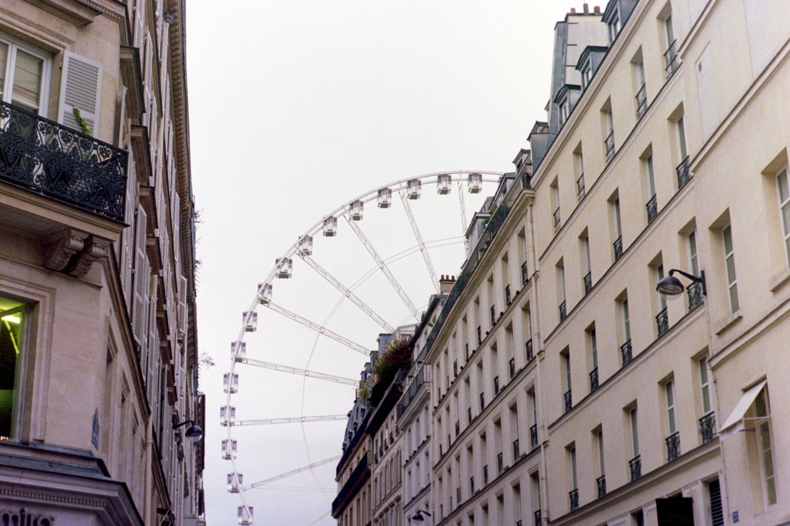
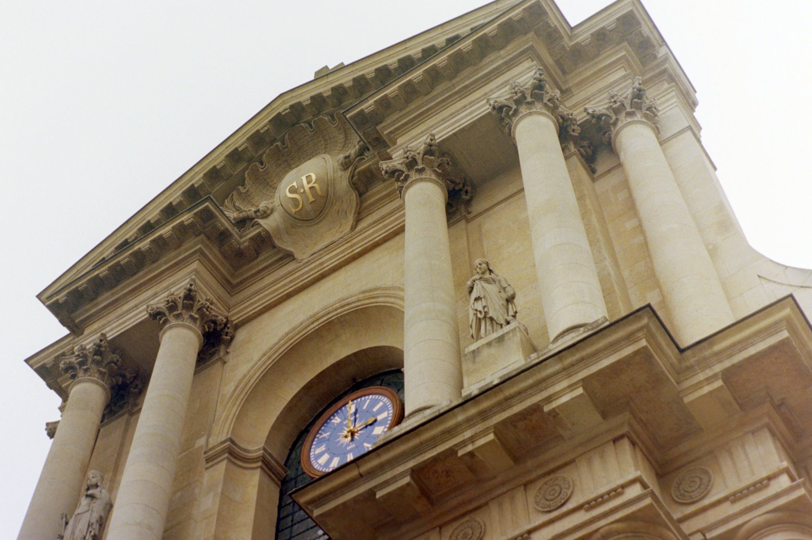
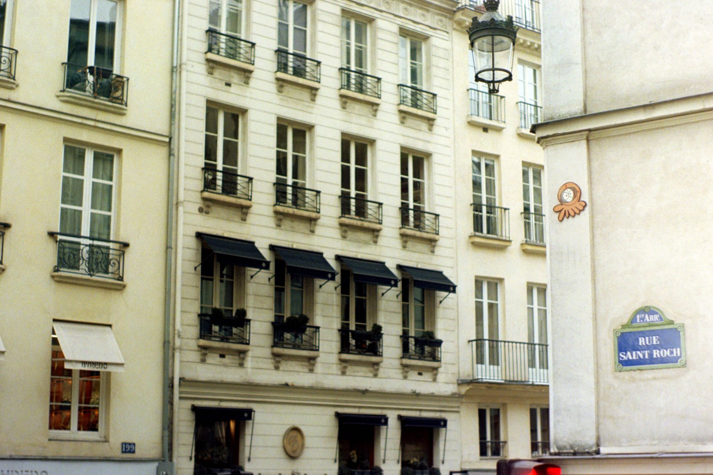
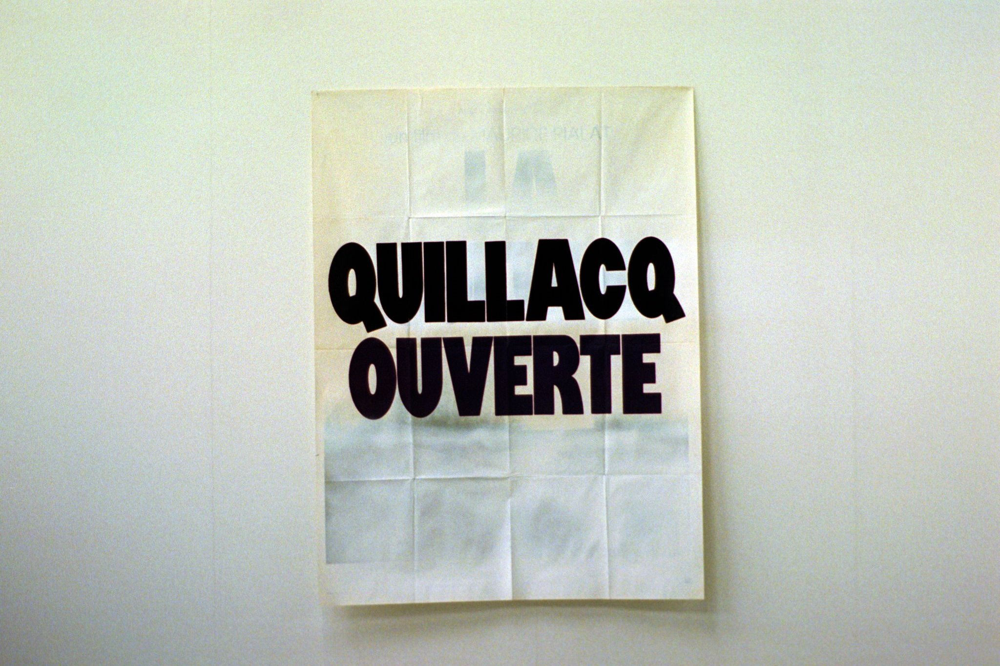
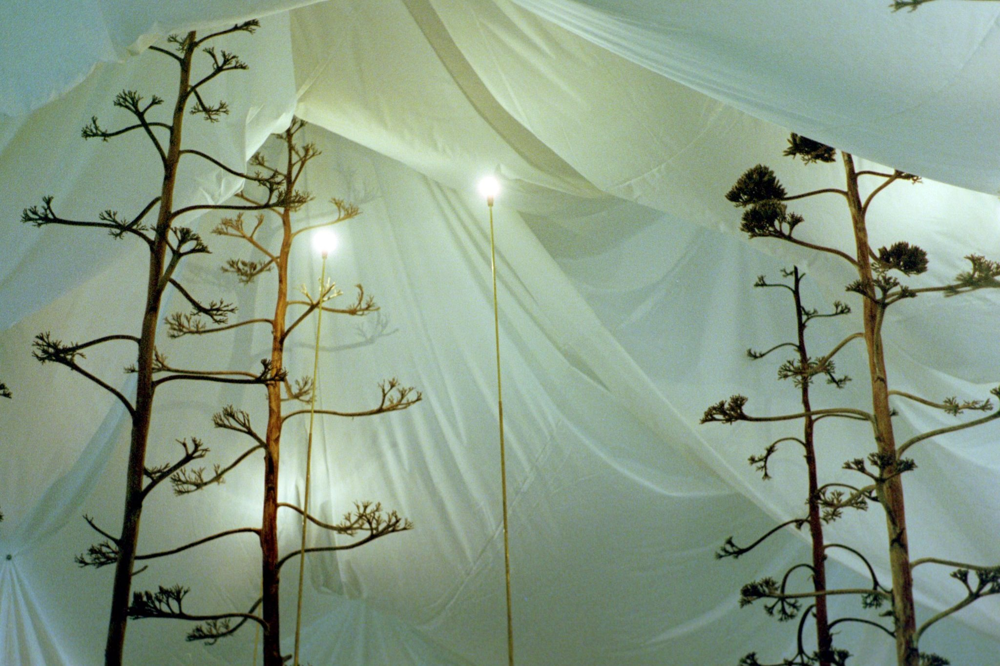
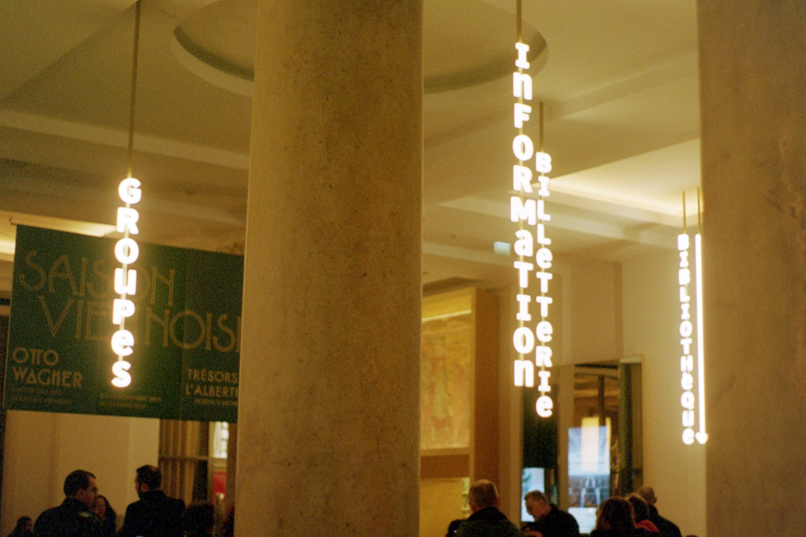
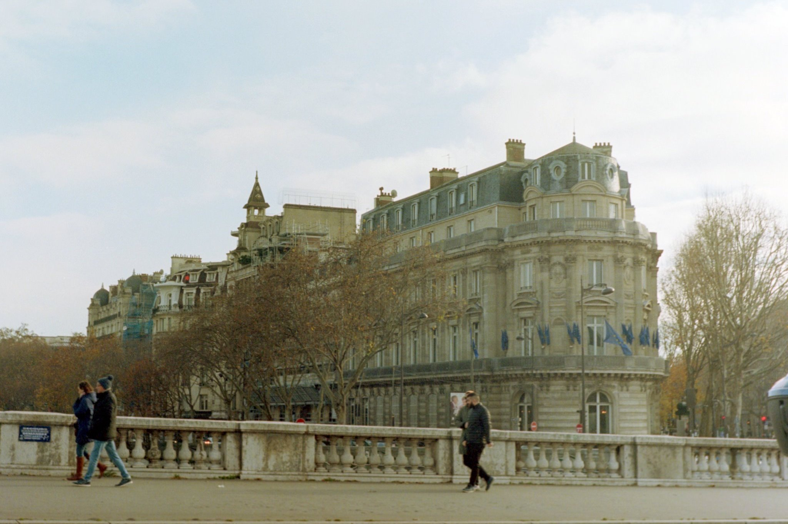
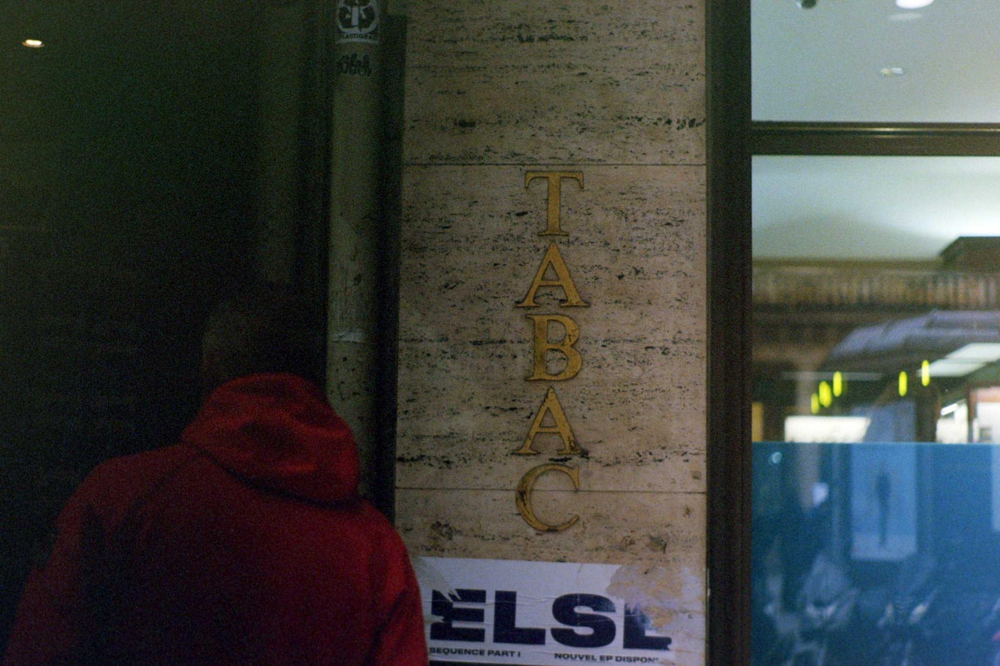
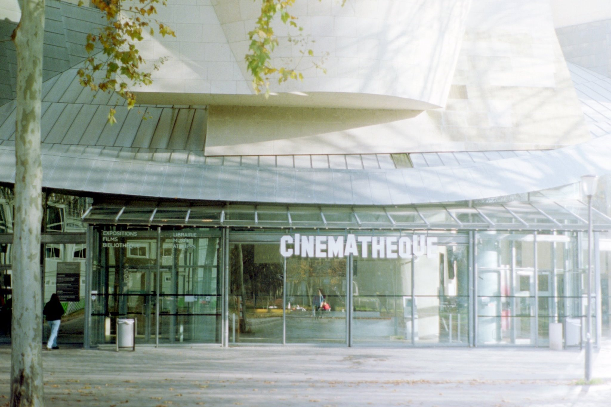
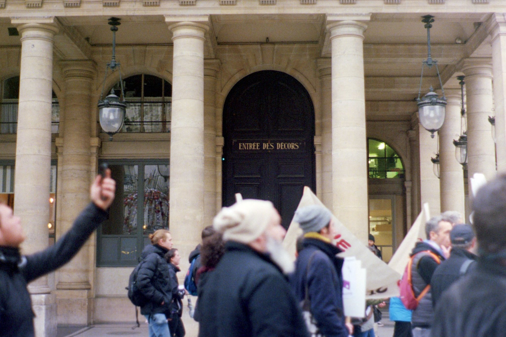
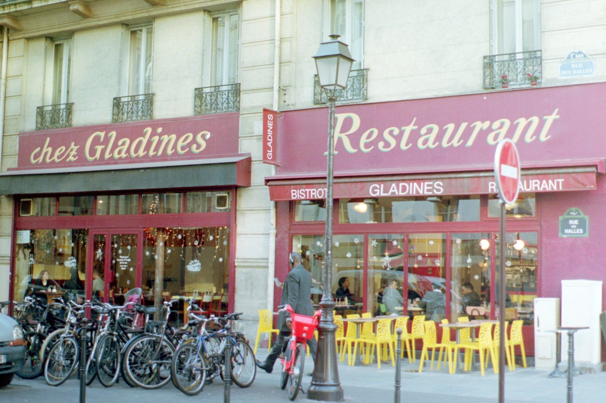

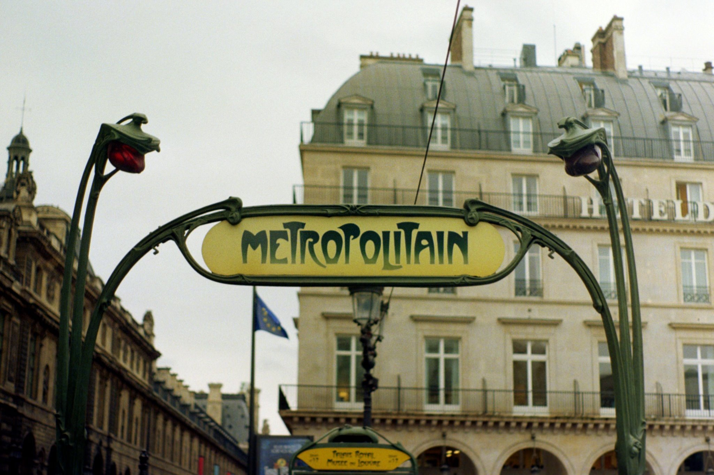
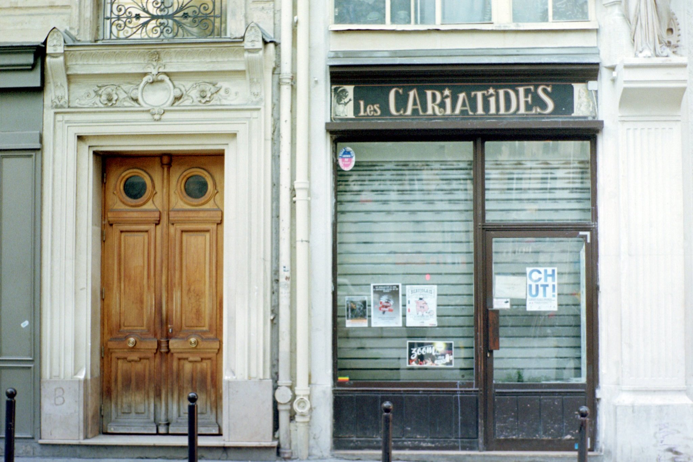
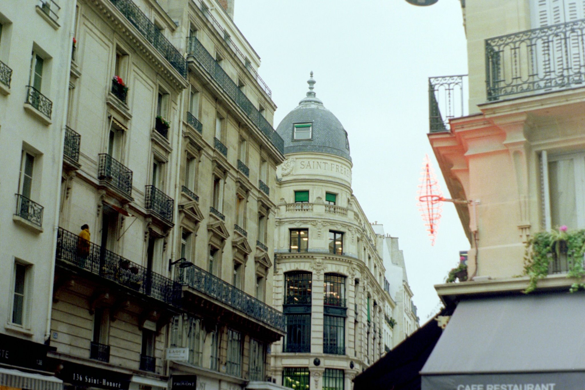